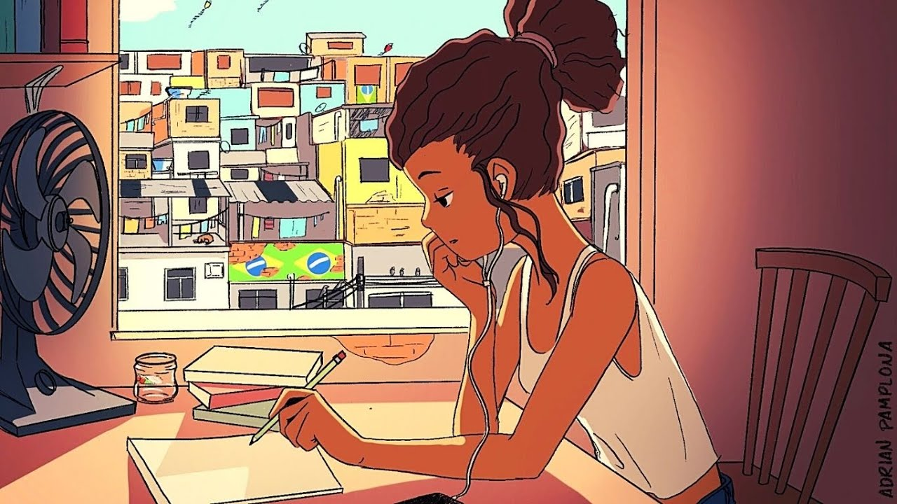
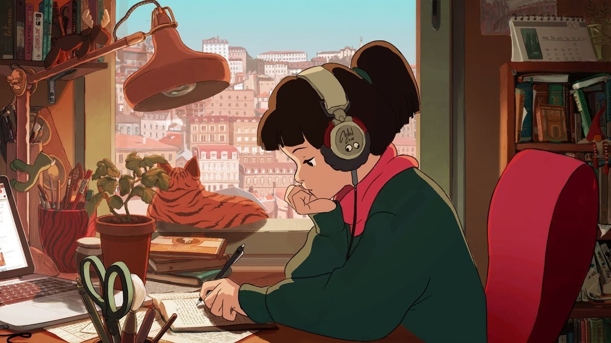

o que é e por que fez tanto sucesso na pandemia?
Rodando o feed do YouTube, é possível que você já tenha visto vídeos cuja capa mostra uma garota com traços de anime
estudando com fones de ouvido. Essa é uma imagem típica que indica os longos sets de música Lo-fi.
Misturando batidas do jazz e do hip-hop, esse gênero se tornou bem popular durante a pandemia do coronavírus. A seguir,
entenda um pouco da origem desse estilo musical e como ele se tornou a trilha sonora oficial do home office.
Lo-fi é o diminutivo de Low Fidelity (baixa qualidade, em inglês). O termo é associado a registros sonoros com imperfeições
que seriam consideradas erros no processo de gravação em fitas de rolo, como eram gravados os discos antigamente. Nos anos
1980, a expressão ficou bem popular no meio do hip-hop graças ao DJ William Berger, porque seu programa na rádio WFMU de Nova
York tinha como característica apenas tocar músicas gravadas de modo caseiro em fitas k7 Lo-fi.
Mais de anos depois, muitos produtores ainda se inspiram nesse formato peculiar para elaborar trabalhos e criam uma “atmosfera sonora”
que lembra as reproduções em antigas vitrolas e toca-fitas, além de acrescentar outros chiados “caseiros”.
O lado nostálgico combinado com a leveza e a simplicidade típicas do jazz ajudam a construir um ambiente tranquilo para diversas pessoas — um
fator que contraria os estudos que indicam que ouvir úsica afeta negativamente a criatividade.

